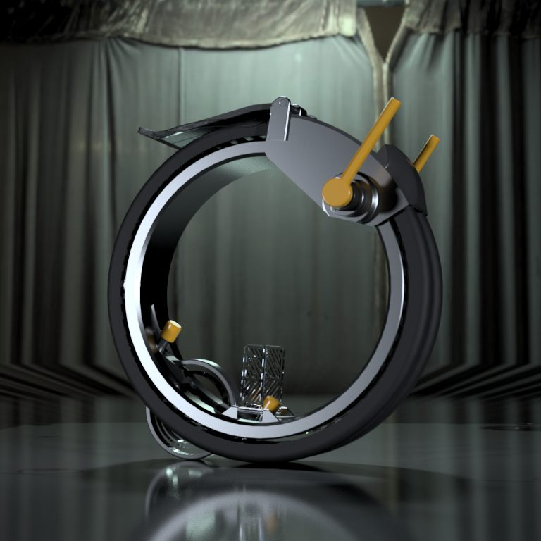
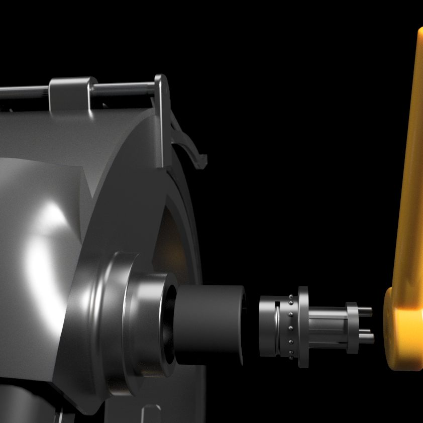
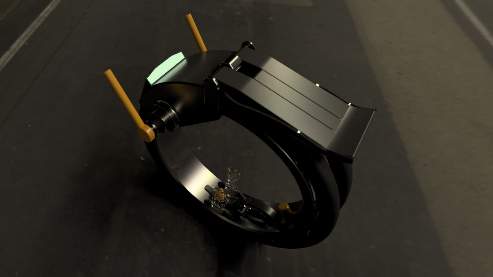
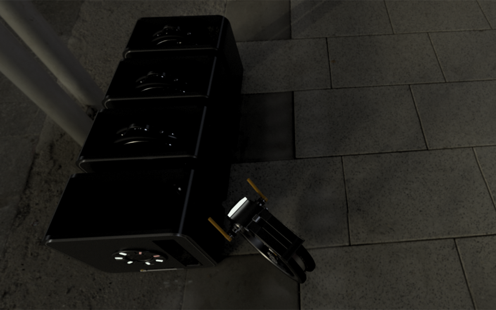
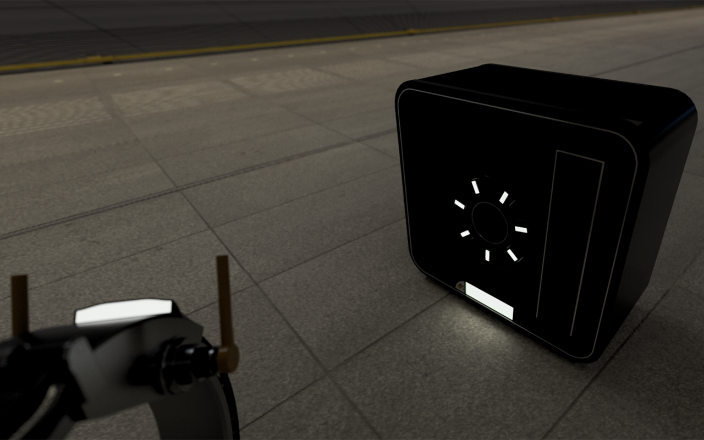
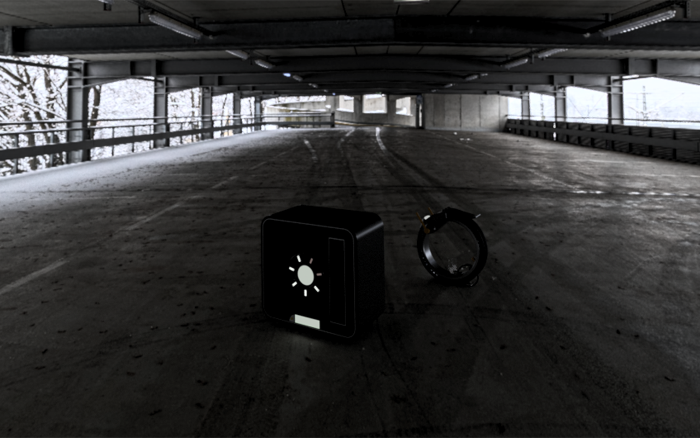
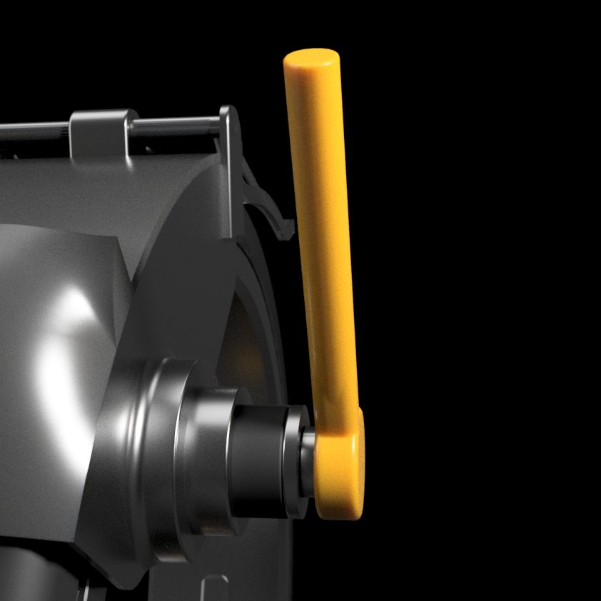
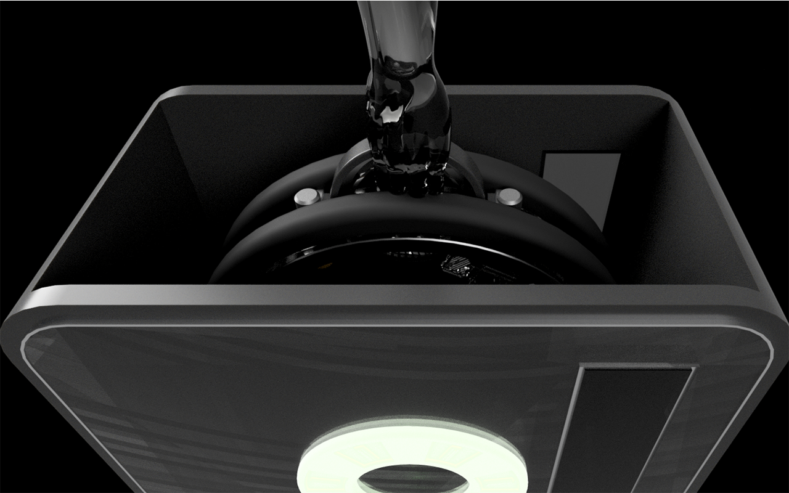

The last mile is a challenge for Australian communities that rely on public transport. Over the last decade, the growth in electric scooters and bikes has made travelling easier, but has promoted further problems in public storage and appropriate charging facilities.
The Urchin Unicycle and Charger was designed as an ecosystem for the public transport system to adopt and address the issues of the last mile. The vehicle design is made to accommodate people of all skill levels, ranging from their first time riding a bike to advanced single-wheel riders. All contained within a singular, round urchin-shaped design.


The Urchin can be ridden like an electric unicycle, with users standing with their feet on either side of the wheel. It was also designed to have a user sit and control the vehicle with handles. Built-in training wheels let users sit comfortably without having to concern themselves with falling over.

The Urchin charging units would be found at bus stops and train stations. Allowing people to drop off their public-use device or store privately owned versions. They act as a locked unit that can be opened and closed with an ID card, for easy access on and off your daily travel routes.


Another feature designed into the framework of the Urchin is the interchangeable and upgradeable parts for a more engaging and personal experience. Being able to make your own Urchin unicycle more uniquely tailored by swapping out handles, seat styles, displays and more.

The ecosystem’s integration with bus stations and train stations reduces the first and last mile issue by allowing public-use and private vehicles to charge as users get onto their mode of larger public transport, whether it’s a bus or train. Further ideation for the future of the Urchin system also has chargers and unicycles available on trains and buses too, for easy on and off access.


The urchin still remains a concept piece, and is waiting to be brought to scale, where its size, balance and interaction will be reviewed and tested.